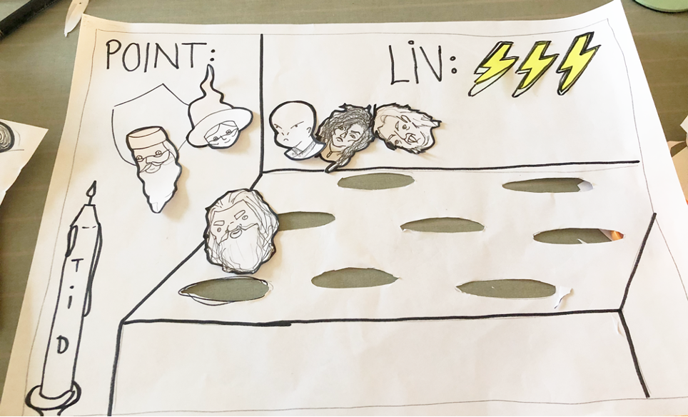
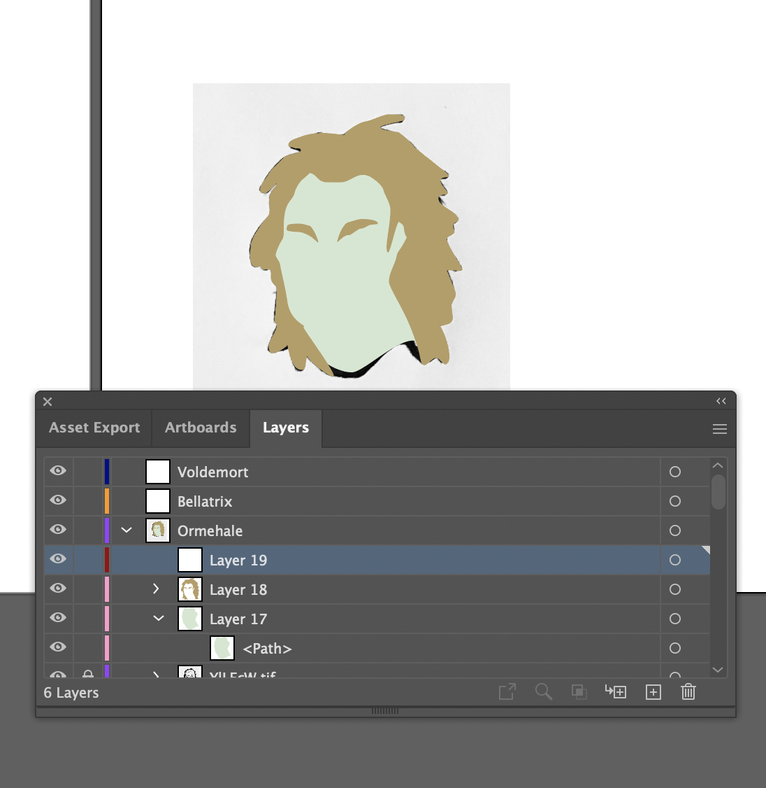
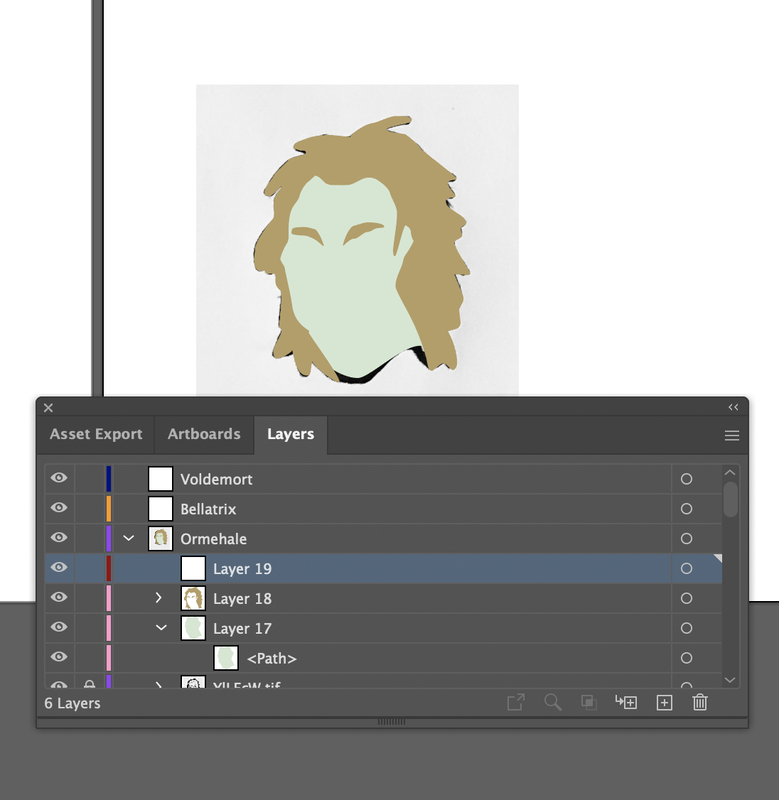
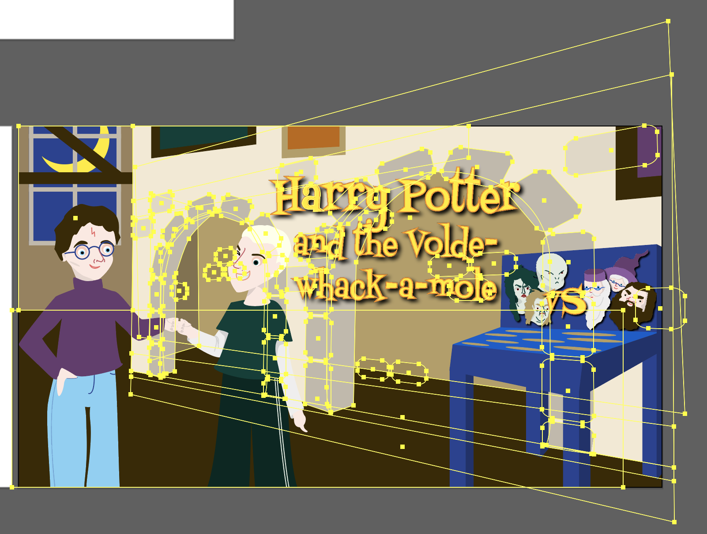
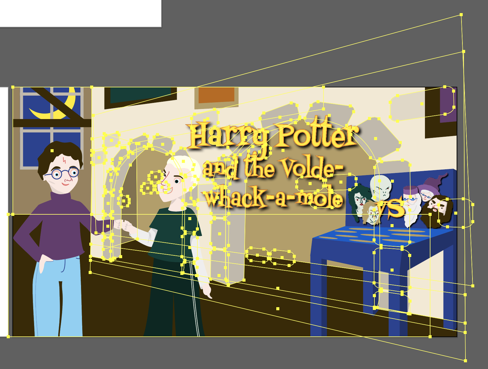

TEMA 4: Grundlæggende animation
Denne gang blev vi introduceret for et nyt kodningssprog, nemlig javascript. Måden hvorpå vi lærte at anvende det, var ved at kode et spil i både html, css og javascript.
For at kunne lave et spil, krævede det at jeg designede mine egne spilkarakterer og udviklede en historie. Dette gjorde jeg gennem forskellige idégenerering- og skitseringsmetoder. Mine skitser overføres til illustrator, hvor jeg modullerede ovenpå og tegnede dem færdige.
Alle elementer var i vector frem for pixels, da kvaliteten af elementerne ved skalering ikke forandres. Af samme grund eksporteres elementerne som .SVG-filer (Scalable Vector Graphics").
Vi blev desuden introduceret til Adobe Audition, idét vi skulle have lyde med i vores spil. Når lydene var udarbejdede og finpudset i Audition, skulle de indlejres i HTML, samt kodes i Javascript.

04.05.03 temaopgave
Spil-idé
Jeg kastede mig over whack-a-mole-spillet i denne opgave.
Temaet drømte jeg om skulle være Harry Potter, og selv efter idégeneringen bl.a.
gennem metoden, hvor man tegnede streger mlm. 3 ord og fandt på en historie,
skunne jeg ikke slippe temaet.
Metoden bidrog til at finde på min egen historie indenfor dette tema.
Mine visioner for spillet gjorde det en anelse kompliceret for mig selv,
men da jeg kom på den anden side af opgaven, kom jeg i mål med dem alle.
Et af de såkaldte komplikationer var visionen om, at timeren var et brændende stearinlys.
Det krævede noget ekstra javaScript, da jeg skulle lave en slags stopmotion af mine illustrationer.
Resultatet blev som jeg ville have det.
Skitser
Proces
 

 

Uddrag fra Assetlisten


Aktivitetsdiagram og statemachinediagram


Lyde
Dette spil krævede som sagt også nogle selvgjorte lyde, som ligeledes skulle indlejres i spillet. Jeg optog og redigerede 4 lyde til mit spil;